Der Bleiche Jäger
In bestimmten Nächten pirscht der Bleiche Jäger (Pale Hunter) mit seinen geisterhaften Hunden durch den Großen Wald Der Große Wald. Dann bleiben selbst die mutigsten Jäger im Dorf. Das Waldvolk (Forest Folk, Das Waldvolk) sprach von ihm wie von einer Naturgewalt – weniger ein Gott, den man anbetet, als ein Sturm, den man übersteht.
Die Geschichten sind sich uneins darüber, was geschieht, wenn man dem Jäger über den Weg läuft. Vielleicht beachtet er dich nicht, vielleicht ruft er dich, dich ihm anzuschließen, oder er erklärt dich zu seiner Beute. Doch in einem sind sich alle Geschichten einig: Beeindrucke ihn, und du wirst reich belohnt. Lass dich erwischen oder versäume deinen Teil – nun, daran denkt man besser nicht.
Aufhänger
- Jemand ist noch draußen im Wald, doch heute Nacht streift der Bleiche Jäger umher!
- Der Bleiche Jäger soll ein Artefakt bei sich tragen, das die SC wollen oder brauchen.
- Die SC wollen eine Seele retten, die der Jäger gebunden hält.
- Die SC treffen einen Reisenden, der insgeheim untot ist. Der Jäger hat seine Witterung aufgenommen.
Überlieferung
Der Bleiche Jäger schätzt würdige Beute und würdige Gesellschaft: die Flinken, die Klugen, die Tapferen. Doch wenn er durch den Wald streift, jagt er immer etwas, selbst wenn es unter seiner Würde ist. Das weiß jeder.
Etwas Interessantes: Er lässt jede andere Beute links liegen, um Untote zu jagen, und verfolgt sie sogar außerhalb des Großen Waldes und in Nächten, in denen er sonst nicht umherstreift.
Etwas Nützliches: Um den Jäger auf ein untotes Wesen zu hetzen, beschaffe einen Gegenstand, der dessen Geisterwitterung trägt. Verbrenne ihn in einer mondhellen Nacht in einem qualmenden Feuer aus frisch geschnittenen Zedernzweigen.
Fragen
Laut der Geschichte(n), die du gehört hast …
- Was ist er? Ein Geist, ein Gespenst oder was sonst?
- Was verbindet ihn mit dem Mond?
- Was genau sind seine Hunde?
- In welcher Beziehung steht er zur Krähenherrin (Lady of Crows, Der Tod und die Untoten)?
- Welcher Held hat seinen Respekt errungen, und wie? Welche Belohnung hat er sich verdient?
- Welches grausige Schicksal ereilte den Helden, der es wagte, sich ihm entgegenzustellen?
- Mit welchen Bräuchen Götter und Religion hat das Waldvolk ihn besänftigt?
Und außerdem …
- Welche Geschichten erzählt man sich über ihn in Marschrand (Marshedge, Marschrand)? Oder unter den Manmarchern Nord-Manmarch?
- Wer kam nie nach Hause und soll ihm über den Weg gelaufen sein?
- Wer behauptet, ihn gesehen zu haben? Wann und wo? Was ist geschehen? Was hat sie (dich?) so verstört?
In bestimmten Nächten …
Wann streift der Bleiche Jäger umher? Wählt gemeinsam mit den SC 1 aus:
- Wenn der Mond hoch und voll steht
- Bei Neumond, wenn der Mond fehlt
- In Nächten einer Mondfinsternis
- In mondhellen Winternächten
- In mondlosen Sommernächten
- Beim ersten Vollmond jeder Jahreszeit
- In anderen Nächten, auf die ihr euch einigt Warum sind diese Nächte besonders? Warum pirscht er gerade dann durch den Wald?
Sind die SC in einer solchen Nacht im Großen Wald, wähle oder würfle die Beute des Bleichen Jägers aus:
| 1-2 | Nichts … noch nicht. |
|---|---|
| 3-4 | Kümmerliche Beute: ein Fuchs/Kaninchen/Keiler/Hirsch, ein crinwin, ein Narr, der ihm über den Weg lief, usw. |
| 5 | Würdige Beute: ein ceirwmawr, ein raselbaedd, ein Tierwächter, ein Fae, mit dem er gewettet hat, usw. |
| 6 | Untote Beute: ein Geist oder Wiedergänger, der im Freien erwischt wird, fern von allen Doolbäumen (dool trees, Der Tod und die Untoten). |
Wenn die Zeit reif ist, deute auf eine drohende Gefahr (sein Horn erschallt, seine Hunde heulen, seine Beute prescht vorbei). Biete eine Gelegenheit (zu fliehen, sich zu verstecken, ihn aufzusuchen usw.). Kündige Ärger an (Nebel steigt auf, seine Hunde tauchen auf).
Kreuzen die SC den Weg des Jägers, hängt das Weitere von seiner aktuellen Beute ab, davon, ob sie sich verstecken oder ihm entgegentreten, wie sie sich verhalten, ob Untote unter ihnen sind, und von den launischen Würfeln.
Gefahren

Der Bleiche JägerHP 26; Rüstung 4 (Widerstandskraft)
Schaden Silberspeer mit Vorteil (nah, Reichweite, Wurfwaffe, wuchtig, blutig, 2 durchdringend) oder Silbergeweih mit Vorteil (nah, wuchtig) oder Ringen mit Vorteil (Hand, packend, wuchtig)
Besondere Eigenschaften von Nebel umgeben; kann untote Geister packen/festhalten; scharfe Sinne; unheimliche Reflexe
Instinkt: in der Jagd zu schwelgen, untote Seelen zu beanspruchen
- Ein Kunststück vollbringen
- Sich in Nebel auflösen, neu formen
- Seinen Speer in die Hand rufen
- Weitere Hunde herbeirufen
- Eine tote oder sterbende Seele beanspruchen
Eine hochaufragende Gestalt mit Geweih, leuchtend weiß, das Gesicht im Schatten. Sein Speer ist lang und gerade, mit einer silbernen Mondsichel an der Spitze.
Er ist mit Trophäen vergangener Jagden behängt, die bedrohlich klirren oder seltsam stumm bleiben, ganz wie es ihm dient.
Tipp: Wenn du sprechen musst, sprich leise. Langsam. Knapp über einem Flüstern. Mit häufigen Pausen. Und ohne Regung.
Wenn du dem Bleichen Jäger Schaden zufügst, dem er ausweichen oder den er abfedern könnte, würfelst du mit Nachteil.
Die wahre Natur des Bleichen Jägers bestimmst du, aber vielleicht ist er …
- die Inkarnation Urmächte eines urzeitlichen Wesens der Zyklen und des Mondes;
- ein Geist der Wildnis Die Geister der Wildnis;
- der Geist Der Tod und die Untoten eines Grünen Herrn Die Grünen Herren, der auf ewig jagt;
- ein mächtiger Fae Die Fae;
- einer vom Waldvolk Das Waldvolk, erhöht und verflucht;
- eine Abwandlung des Obigen; oder
- etwas völlig anderes.
Passe die Werte des Jägers seiner Natur an. Eine Inkarnation der Zyklen und des Mondes könnte urzeitlich sein, mit einem Spielzug wie „Ihr Handeln vorhersehen“. Der Geist eines Grünen Herrn hätte die Eigenschaften Geist und untot, einen Anker irgendwo im Wald und 0 Rüstung gegen Silber.
 Geisterhafte Hunde
Geisterhafte Hunde
HP 10; Rüstung 1 (keine Organe), nur durch Salz oder beim Zubeißen verwundbar
Schaden Biss mit Vorteil (Hand, packend)
Besondere Eigenschaften an den Jäger gebunden; können sich nur ~1,5 km von ihm entfernen
Instinkt: die Verfolgung aufzunehmen
- Eine Gestalt aus Nebel annehmen
- Beute oder Tote aufspüren
- Die Meute und den Jäger rufen
- Hetzen, einkreisen, niederreißen
Etwa zwanzig dieser wilden weißen Hunde begleiten ihn in jeder beliebigen Nacht. Doch es gibt mehr. So viele, viele mehr.
Sind es untote Seelen, die er beansprucht hat, verwundbar durch Silber? Fae-Hunde, denen Eisen schadet? Erscheinungsformen irgendeines urzeitlichen Triebs? Das zu bestimmen liegt ganz bei dir.
 Der Ruf der Jagd
Der Ruf der Jagd
Wenn der Bleiche Jäger vorbeiprescht, erbebt deine Seele beim Ruf seines Horns und dem Heulen seiner Hunde – kreuze XP an, wenn du dich der Jagd anschließt.
Wenn du dich der Jagd nicht anschließt oder der Jäger dich verstößt, wird dein Instinkt zu „Zweifel: vor Gefahr zurückzuschrecken, dich selbst infrage zu stellen“, und du kannst nicht Hell brennen einsetzen.
Beides hält an, bis dir eine kühne und waghalsige Tat gelingt.
Die Gunst des Jägers
Der Bleiche Jäger heißt Gesellschaft willkommen, erwartet aber, dass sie mithält und ihren Teil beiträgt. Beginne Folgendes. Verfolge die düsteren Vorzeichen für jeden SC getrennt.
Wenn ein SC den Bleichen Jäger beeindruckt, lösche alle Markierungen, die er angesammelt hat.
Beute auf der Flucht
Verfolgung
Wenn der Bleiche Jäger die SC zur Beute erklärt, gewährt er ihnen einen Vorsprung. Warte ein wenig und beginne dann Folgendes.
Trennen sich die SC, verfolge die düsteren Vorzeichen für jeden getrennt.
Beansprucht
Wenn du auf 0 HP bist und der Bleiche Jäger dir eine Trophäe abnimmt, beansprucht der Jäger deine Seele. Was tut er mit ihr?
Vielleicht …
- übergibt er dich der Krähenherrin und der Letzten Tür;
- reiht er dich in seine Meute ein;
- verzehrt er dein Wesen in silbernem Feuer; oder
- tut er mit jeder etwas anderes.
Wenn du seinen Klauen entkommst, musst du jetzt durch die Letzte Tür gehen oder in der Welt verweilen (erhalte das Beiblatt Geist).
Die Jagd leiten
Der Bleiche Jäger und seine Hunde sind unermüdlich und unerbittlich. Um zu überleben, muss ihre Beute bis zum Sonnenaufgang durchhalten oder den Rand des Großen Waldes erreichen.
Leite die Jagd als eine Reihe von Szenen und Herausforderungen. Wenn du unsicher bist, welche Szene oder Herausforderung du präsentieren sollst, lass einen Spieler den Schicksalswürfel werfen und addiere bei jedem weiteren Wurf 1 (kumulativ).
| 1 | Eine offene Strecke, ein Sprint |
|---|---|
| 2 | Eine Wahl zwischen Pfaden: einer länger, einer riskanter |
| 3 | Ein Hindernis, ein Risiko oder ein Ungeheuer |
| 4 | Ein mühsamer Marsch |
| 5 | Eine Seite teilt sich auf, vielleicht um die andere zu umgehen/zu überlisten/in eine Falle zu locken |
| 6 | Ein gutes Versteck |
| 7 | Eine Atempause, während der Jäger und seine Hunde die Fährte suchen |
| 8 | Als Teil der Jagd: Die Beute ist in Sicht-/Reichweite; als Beute: ein Ort, an den der Jäger nicht gehen kann/will |
| 9 | Als Teil der Jagd: eine Gelegenheit zur Gnade, die Beute laufen zu lassen; als Beute: eine Gelegenheit zu entwischen oder den Jäger zu überrumpeln |
| 10 | Ein letzter wilder Spurt vor der Morgendämmerung oder zum Rand des Waldes |
Wechsle mit jeder Szene oder Herausforderung das Gelände Der Große Wald.
Dem Jäger entkommen
Einige Listen, die funktionieren könnten, sind …
- an einen Ort zu gehen, wohin er nicht folgt (siehe unten);
- fließendes Wasser zu durchqueren, um seine Hunde abzuschütteln;
- den eigenen Geruch mit Moschuskraut oder einer anderen stark riechenden Pflanze zu überdecken;
- ihn mit einem Geist abzulenken oder mit etwas, das wie einer wirkt;
- ihn einer großen, revierbewussten Kreatur in den Weg zu führen – etwa einem Hagr Der Große Wald oder cynddaraig Der Große Wald –, etwas, das ihn aufhält;
- sich Hilfe von einem Fae Die Fae oder einem Geist der Wildnis Die Geister der Wildnis zu holen; oder
- Magie einzusetzen, um ihn und seine Hunde zu fangen, abzuwehren oder sich vor ihnen zu verbergen.
Orte, wohin er nicht folgt
Die Beute des Jägers könnte Zuflucht finden …
- in der Nähe von Doolbäumen Der Tod und die Untoten, denen er sich offenbar nicht nähern kann;
- an bestimmten Orten, die mit Glyphen Das Waldvolk des Waldvolks markiert sind;
- in einem der Roten Haine Die Roten Haine, je nach der wahren Natur des Jägers vielleicht;
- vielleicht durch einen Wegstein Die Wegsteine, auf den Pfaden der Fae;
- in Höhlen oder anderen Orten, die zu klein sind, als dass der Jäger hineinkäme (seine Hunde aber wahrscheinlich schon); oder
- in der Nähe eines stark verderbten Schauplatzes Die Dinge in der Tiefe.
Viele dieser Orte bergen eigene Gefahren, und der Jäger ist geduldig und gerissen. Er wird sie einkreisen, abwarten und/oder versuchen, sie herauszutreiben, wie es sinnvoll ist.
Besonderer Spielzug
Push On!
Wenn du versuchst, mit dem Jäger und seinen Hunden mitzuhalten oder ihnen voraus zu bleiben, und du normale oder leichte Last trägst, würfle +CON: bei 10+ gelingt es dir, und du hast sogar einen Moment, um nachzudenken, zu Atem zu kommen oder einem Verbündeten zu helfen; bei 7-9 hältst du durch, aber wähle 1:
- Du wirst schwächer; kreuze eine Schwächung an
- Reduziere auf leichte Last, oder wirf ◇ ab, wenn deine Last schon leicht ist
- Du verlierst an Boden oder die Gunst des Jägers; sag der SL, dass sie auf das drohende Verhängnis zurücken soll
- Du brauchst die Hilfe eines Verbündeten
Bei 6- oder wenn du schwere Last trägst: Wähle 1 der obigen Punkte und frag die SL, was sonst noch schiefgeht oder vor welcher neuen Herausforderung du nun stehst.
Hinweis: Die Spielzüge Zu Hause in der Wildnis und Wegbereiter (aus dem Spielbuch des Waldläufers) gelten auch für diesen Spielzug.
Belohnungen
Der Bleiche Jäger belohnt jene, die sich ihm anschließen und ihn beeindrucken, und Beute, der die Flucht gelingt. Die Belohnung könnte sein:
- Ein Zeichen seiner Gunst, das die Krähenherrin Der Tod und die Untoten anstelle einer Seele annimmt
- Eine seiner vielen Trophäen (und vielleicht die Seele, die darin gebunden ist)
- Ein Artefakt oder Arkanum, etwas Tragbares, das er am Leib verborgen hält
- Sein Segen für ihre Klinge(n), die Untoten nun schaden, als wären sie aus Silber
- Eine ehrliche Antwort
- Ein silbernes Horn (siehe unten)
Silbernes Horn
Wenn du das Horn nachts im Freien in Gegenwart von Untoten bläst, zerfällt das Horn und Nebel steigt auf. Die Untoten fliehen, und bald erscheinen der Bleiche Jäger und seine Hunde, um sie zu jagen.
Jäger der Toten
Warum jagt er die Toten? Vielleicht …
- sind sie die würdigste Beute;
- liegt es in seiner Natur;
- schuldet er der Krähenherrin einen Zehnt;
- sinnt er auf Rache an ihnen;
- eine Abwandlung des Obigen; oder
- etwas völlig anderes.
Wie auch immer: Er verfolgt Untote auch über den Großen Wald hinaus und nimmt manchmal ihre Witterung auf, selbst wenn er gerade nicht durch die Welt streift. Dann erscheint er Nächte später und jagt sie bis zum Morgengrauen. Überlebt eine solche Beute, besteht ihr einziger Lohn darin, dass sie den Jäger von ihrer Fährte abgeschüttelt hat.